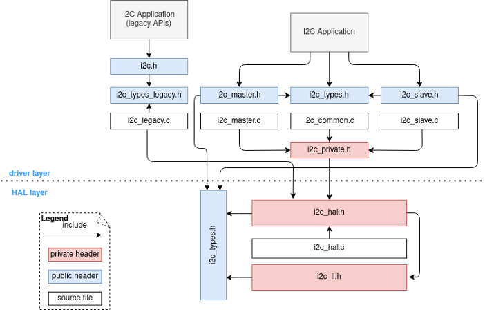
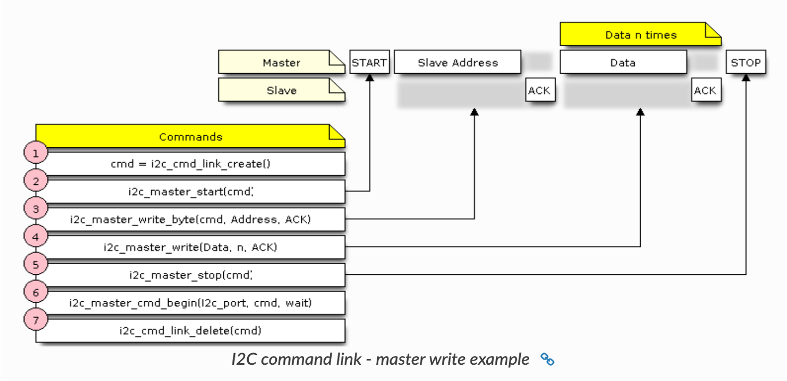
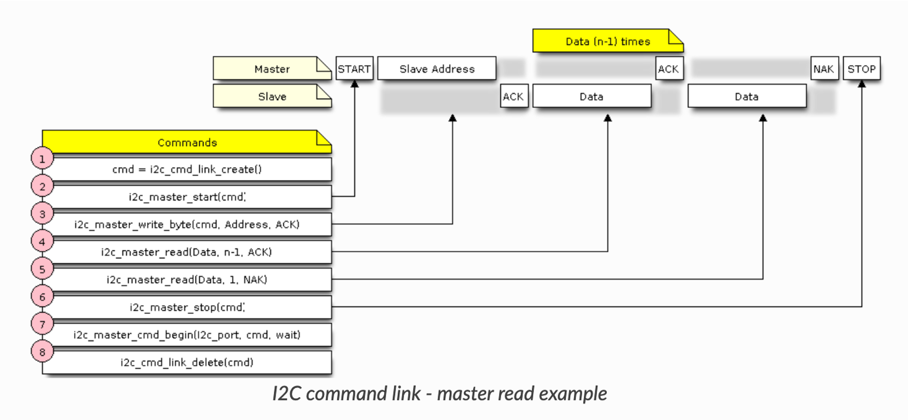

Práctica 4. Bus I2C. Sensor de temperatura
Objetivos
El objetivo de esta práctica es conocer el funcionamiento del bus I2C y la interfaz que ofrece ESP-IDF para su uso. Trabajaremos los siguientes aspectos del API de ESP-IDF: * Configuración y uso del controlador I2C. * Uso de sensor de temperatura y humedad (Si7021). * Uso del sensor ICM-42670-P (IMU)
Material de consulta
Para ver los detalles de cada aspecto de esta práctica se recomienda la lectura de los siguientes enlaces:
Bus I2C
Fue desarrollado en la empresa Philips (ahora NXP) en la década de los 80 con el objetivo de comunicar circuitos integrados con número mínimo de pines. El nombre I2C viene de Inter IC. Se usa tanto la abreviatura I2C como IIC. En 2014, NXP publicó la Rev. 6 del protocolo.
Proporciona una conexión serie síncrona unidireccional (no permite envíos en dos direcciones de forma simultanea). La velocida máxima de comunicación era originalmente de 100 kbit/s, y muchas aplicaciones no requieren de velocidades mayores. Existe un fast mode a 400kbits/s, fast mode plus (1Mbits/s), ambos compatibles hacia atrás y sin lógica adicional (aunque puede suponer ajustes en las resistencias de pull-up para controlar las corrientes requeridas). La especificación high speed mode - HS I2C permite conexiones a 3.4Mbits/s, pero exige lógica adicional. En nuestras pruebas, se recomienda mantener 400 kbits/s.
Las principales características de I2C son: * Sólo require dos líneas: SDA y SCL. * No hay requerimientos estrictos de baud rate como en RS232, ya que el master genera la señal de reloj. * Existe una relación sencilla master/slave entre todos los componentes. * Permite tener varios master pues proporciona mecanismos de arbitraje y detección de colisiones. * Cada dispositivo tiene una única dirección de 7-bits (en ocasiones, de 10 bits) que proporciona el fabricante.
Nueva interfaz I2C en ESP-IDF
ESP-IDF ha cambiado completamente el interfaz para el uso de dispositivos I2C, simplificando significativamente su uso. La nueva estructura puede observarse en la siguiente figura, obtenida de la documentación de ESP-IDF.
 (fuente: ESP-IDF Programming Guide)
Consulta la documentación de ESP-IDF sobre I2C para ver los detalles de la API. A continuación, resumimos lo más relevante.
El uso de dispositivos I2C con ESP-IDF sigue las siguientes etapas:
-
Inicialización e instanciación del master bus driver. Es necesario obtener un handle del bus I2C que se vaya a utilizar. En el SoC montado en la placa ESP32 Devkit-c hay 2 controladores I2C, mientras que en el SoC montado en la placa ESP32-C3 Rust Board sólo hay uno. Esta acción debe hacerse una única vez en toda la aplicación.
-
Especificar y condigurar el dispositivo al que conectaremos. Deberemos añadir al bus cada dispositivo I2C que conectemos a nuestro ESP32, obteniendo así un handle que será el que finalmente utilizaremos en las llamadas de lectura/escritrura.
-
Lectura y escritura del dispositivo. A partir de ese punto, podemos realizar transacciones con el dispositivo.
-
Liberar recursos. Como en cualquier otro caso, una vez se haya finalizado con el uso de los recursos, conviene liberarlos para evitar memory leaks.
Inicialización e instanciación del master bus driver
ESP-IDF proporciona 2 llamadas para configurar el bus I2C (pin SDA, pin SCL, señal de reloj...) e instanciar el bus para obtener un handle. A continuación se incluye un extracto de código con un ejemplo:
static i2c_master_bus_handle_t i2c_handle;
i2c_master_bus_config_t bus_config = {
.clk_source = I2C_CLK_SRC_DEFAULT,
.i2c_port = I2C_NUM_0,
.scl_io_num = 8,
.sda_io_num = 10,
.glitch_ignore_cnt = 7,
.flags.enable_internal_pullup = true,
};
ESP_ERROR_CHECK(i2c_new_master_bus(&bus_config, &i2c_handle));
Especificar y condigurar el dispositivo al que conectaremos
Para cada dispositivo I2C que conectemos a nuestro bus (recuerda que podemos conectar múltiples dispositivos a las mismas líneas SDA/SCL) debemos obtener un handle especificando aspectos como su dirección, la velocidad del bus, la longitud de la dirección (7 bits por defecto, pero puede ser 10 bits)...
Se incluye un pequeño extracto de código como ejemplo:
i2c_master_dev_handle_t dev_handle;
const i2c_device_config_t i2c_dev_cfg = {
.device_address = 0x43,
.scl_speed_hz = 400000,
};
i2c_master_bus_add_device(i2c_bus, &i2c_dev_cfg, &dev_handle);
Lectura y escritura del dispositivo
Una vez hemos obtenido el handle del dispositivo, podemos proceder a enviar comandos (mediante una escritura al dispositivo) y leer los valores enviados por el sensor (o escribir si se trata de un dispositivo de salida).
Para ello, ESP-IDF proporciona varias funciones. A continuación se incluye el prototipo de las más habituales:
// Trasnmite write_size bytes de información disponibles en write_buffer al dispositivo i2c_dev
esp_err_t i2c_master_transmit(i2c_master_dev_handle_t i2c_dev, const uint8_t *write_buffer, size_t write_size, int xfer_timeout_ms);
// Solicita read_size bytes de información al dispositivo i2c_dev para almancenarnos en read_buffer
esp_err_t i2c_master_receive(i2c_master_dev_handle_t i2c_dev, uint8_t *read_buffer, size_t read_size, int xfer_timeout_ms);
// Opreación de escritura I2C seguida de lectura
esp_err_t i2c_master_transmit_receive(i2c_master_dev_handle_t i2c_dev, const uint8_t *write_buffer, size_t write_size, uint8_t *read_buffer, size_t read_size, int xfer_timeout_ms);
Habitualmente, se enviará primero un comando con la función i2c_master_transmit() y posteriormente se recibirá la información con i2c_master_receive().
Interfaz I2C en ESP-IDF (antiguo driver)
ESP-IDF proporcionaba este API para el uso de dispositivos I2C. Permite usar el ESP32 tanto como master como en modo slave. Nuestro SoC ESP2 dispone de dos controladores, por lo que podríamos configurar uno como master y otro como slave (o cualquier otra combinación).
Los pasos para usar un dispositivo I2C son:
- Configuración de la conexión. Indcaremos qué pines usamos como SDA y como SCL, si queremos habilitar pull-up (es aconsejable tener uno externo), el modo (master/slave) y la frecuencia de reloj en HZ. Todo ello se escribe en una estructura de tipo
i2c_configt_ty se cconfigura mediante la llamada ai2c_param_config(). - Instalación del driver mediante la llamada
i2c_driver_install, donde indicaremos, entre otras cosas, qué controlador I2C usaremos (0 o 1). - Realizar las escrituras y lecturas necesarias.
Para comuicarnos con un sensor, configuraremos el ESP32 en modo master. Tras instalar el driver procederemos a iniciar la comunicación con el sensor:

Como se indica en la figura anterior, extraída de la web oficial de Espressif, debemos crear un paquete de comandos (cmd_link) mediante la llamda a i2c_cmd_link_create(). En ella incluiremos cada elemento del protocolo I2C:
* Bit de start.
* Dirección del dispositivo slave (7 bits).
* Bit de lectura/escritura.
* Secuencia de bytes que se desean escribir.
Es importante resaltar que, aunque lo que deseemos sea leer de un sensor (por ejemplo, leer la temperatura), es necesario escribir en el bus, pues lo primero que haremos será enviar la dirección (primer write_byte) y, habitualmente, un comando al dispositivo sensor.
También conviene resaltar que la comunicación no se produce hasta que no se llega a la llamada i2c_master_cmd_begin().
En la siguiente figura se observa un patrón habitual para la lectura:

Nuevamente, la primera llamada (tras crear el enlace y el bit de start), es a i2c_master_write_byte(), pero esta vez se establecerá el bit de operación a lectura (el bit que se incluye tras los 7 bits de dirección del slave). Tras enviar ese primer byte, el ESP32 quedará a la escucha de bytes por parte del sensor mediante llamadas a i2c_master_read().
Como en el ejemplo anterior, la comunicación no se produce hasta que no se llega a la llamada i2c_master_cmd_begin(), por lo que si queremos leer varios bytes debemos almacenarlos en posiciones diferentes de memoria y procesarlos después de esta llamada.
Existen también llamadas de más alto nivel, como i2c_master_read_from_device() y i2c_master_write_read_device() que permiten, en ocasiones, simplificar nuestro código.
Sensor Si7021
El Si7021 es un sensor de humedad y temperatura fabricado por Silicon Labs. Este sensor incopora un ADC internamente, que permite digitalizar las lecturas de los sensores y enviarlas a través del interfaz I2C integrado.

En el maletín del máster viene montado en una placa fabricada por Adafruit. Adfruit es una compañía fundada por Limor Fried con la intención de convertirse en un portal de referencia para el aprendizaje de electrónica y la fabricación de diseños para makers de todos los niveles. ¡Merece mucho la pena echar un vistazo a su web!
Dependiendo de la versión del PCB que haya en el maletín, puede que únicamente haya pines expuestos (Vin, 3Vo, GND, SCL y SDA) o conectores STEMMA QT, compatible con los conectores Qwiic de Sparkfun (Sparkfun es otra compañía tan interesante como Adafruit). Lamentablemente, nuestra placa ESP32 DevKit-C no tiene conectores de ese tipo, por lo que necesitaremos conectar directamente los 4 cables: alimentación, tierra, SCL y SDA.
De acuerdo a las especificaciones del sensor Si7021, el voltaje de entrada no debe superar los 3.6V. La placa de Adafruit proporcionada tiene un regulador de voltaje que nos permite conectar tanto 3.3V como 5V.
La sección de la hoja de especificaciones del sensor Si7021 informa acerca del interfaz I2C que ofrece el sensor. Nos indica los 7 bits de dirección del sensor, así como de los comandos disponibles (la mayoría de ellos de 1 byte).
La sección 5.1.2 del documento explica cómo obtener una medida de temperatura tras haber realizado una medidad de humedad. Para ello usa el comando 0xE0. En nuestro caso deberemos usar 0xE3 o 0xF3 para la lectura de la temperatura. Una vez leiodos los dos bytes, se puede calcular la temperatura de acuerdo a la fórmula descrita en el datasheet:
i2ctools (opcional)
Compila y prueba el ejemplo i2c_tools de la carpeta de ejemplos (examples/peripherals/i2c/i2c_tools). Conecta el sensor a los pines indicados por defecto (también a Vcc y a tierra) y ejecuta al comando i2cdetect. Prueba a los distintos comandos disponibles para tratar de leer información del sensor.
Ejercicios obligatorios
Usar sensor Si7021 en ESP32 devkit-c
Escribe un código que monitorice la temperatura leyendo el sensor Si7021 conectado al ESP32 devkit-c v4 (placa antigua). Utiliza el nuevo driver para realizar la implementación. Para ello puedes seguir el siguiente template:
#define I2C_SDA_PIN ...
#define I2C_SCL_PIN ...
#define I2C_FREQ_HZ 100000
#define I2C_DEV_ADDR 0x40 // Dirección I2C del Si7021
static const char *TAG = "si7021";
static float si7021_read_temperature(i2c_master_dev_handle_t dev)
{
...
uint16_t raw = ...;
float temp_c = ((175.72f * raw) / 65536.0f) - 46.85f;
return temp_c;
}
static float si7021_read_humidity(i2c_master_dev_handle_t dev)
{
uint16_t raw = ...;
float rh = ((125.0f * raw) / 65536.0f) - 6.0f;
if (rh > 100.0f) rh = 100.0f;
if (rh < 0.0f) rh = 0.0f;
return rh;
}
void app_main(void)
{
// Configurar el bus I2C
i2c_master_bus_config_t bus_config = {
.i2c_port = I2C_NUM_0,
.sda_io_num = I2C_SDA_PIN,
.scl_io_num = I2C_SCL_PIN,
.clk_source = I2C_CLK_SRC_DEFAULT,
.glitch_ignore_cnt = 7,
.flags.enable_internal_pullup = true,
};
i2c_master_bus_handle_t bus_handle;
ESP_ERROR_CHECK(i2c_new_master_bus(&bus_config, &bus_handle));
// Añadir el dispositivo Si7021
i2c_device_config_t dev_config = {
.dev_addr_length = I2C_ADDR_BIT_LEN_7,
.device_address = I2C_DEV_ADDR,
.scl_speed_hz = I2C_FREQ_HZ,
};
i2c_master_dev_handle_t si7021;
ESP_ERROR_CHECK(i2c_master_bus_add_device(bus_handle, &dev_config, &si7021));
// Bucle principal: alternar lecturas cada segundo
while (1) {
float temp = si7021_read_temperature(si7021);
if (temp > -100.0f)
ESP_LOGI(TAG, " Temperatura: %.2f °C", temp);
vTaskDelay(pdMS_TO_TICKS(1000)); // Esperar 1 segundo
float hum = si7021_read_humidity(si7021);
if (hum >= 0.0f)
ESP_LOGI(TAG, " Humedad: %.2f %%", hum);
vTaskDelay(pdMS_TO_TICKS(1000)); // Esperar 1 segundo antes del siguiente ciclo
}
// Limpieza
ESP_ERROR_CHECK(i2c_master_bus_rm_device(si7021));
ESP_ERROR_CHECK(i2c_del_master_bus(bus_handle));
}
Usar componente ICM-42670-P con nuevo driver
El registro de componentes de IDF incluye un componente para utilizar la IMU incluida en la placa ESP-RUST-BOARD (con el SoC ESP32-C3):ICM42607/ICM42670 6-Axis MotionTracking (Accelerometer and Gyroscope).
Crea una aplicación que monitorice el estado del acelerómetro y determine si la placa está boca arriba o boca abajo. El LED RGB cambiará de color en función de la orientación, y se imprimirá por terminal el estado actual.
Recuerda que, antes de poder usar cualquier dispositivo I2C, es necesario instanciar el controlador de bus I2C que vayamos a utilizar (en este caso, el úinico disponible en esta placa).
static i2c_master_bus_handle_t i2c_handle;
static void i2c_bus_init(void)
{
i2c_master_bus_config_t bus_config = {
.clk_source = I2C_CLK_SRC_DEFAULT,
.i2c_port = I2C_NUM_0,
.scl_io_num = 8,
.sda_io_num = 10,
.glitch_ignore_cnt = 7,
.flags.enable_internal_pullup = true,
};
ESP_ERROR_CHECK(i2c_new_master_bus(&bus_config, &i2c_handle));
}
Asimismo, tras crear el handle del dispositivo, es necesario configurarlo. El componente ofrece una llamada para ello: icm42670_config(). Puedes usar el siguiente código de configuración:
/* Configuration of the accelerometer and gyroscope */
const icm42670_cfg_t imu_cfg = {
.acce_fs = ACCE_FS_2G,
.acce_odr = ACCE_ODR_400HZ,
.gyro_fs = GYRO_FS_2000DPS,
.gyro_odr = GYRO_ODR_400HZ,
};
ret = icm42670_config(icm42670, &imu_cfg);
Es muy recomendable consultar la carpeta test_apps incluida en el propio componente para aprender a utilizarlo.
Cuestiones
- ¿Qué dirección tiene el dispositivo I2C?
- ¿Qué llamada de ESP-IDF utiliza el código para determinar el device id? ¿Qué comando se envía?
- Antes de usar el acelerómetro, es necesario activarlo con la llamada
icm42670_acce_set_pwr(icm42670, ACCE_PWR_LOWNOISE);. Describe las transacciones en el bus I2C que se desencadena esa llamada. Usa un formato similar a:START | 0x34 WR | 0x44 ACK | ... | STOP | START .... - ¿Qué comando se utiliza para leer el valor en crudo (raw) del acelerómetro?
- ¿Cuántos bytes se leen tras enviar el comando de lectura de acelerómetro raw? ¿A qué se corresponde cada byte?
Ejercicios opcionales
Uso de CRC en sensor
El sensor Si7021 permite el cálculo de un byte de checksum (CRC) para comprobar que no ha habido errores en el envío. Completa el código del componente para leer dicho byte y comprobar que no ha habido errores. Conviene leer la sección 5.1 y una librería para el cálculo de CRC como la ofrecida por BARR.